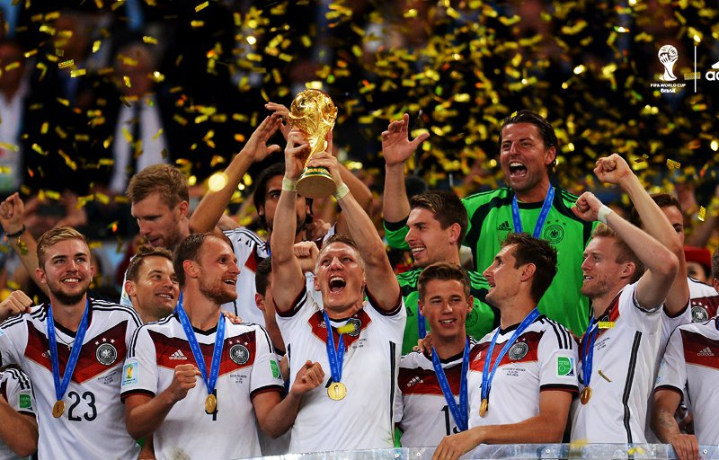

La Coppa del Mondo 2014 si è disputata in Brasile. La Germania ha partecipato con una squadra giovane e forte. Nella fase a gironi ha vinto tutte le partite, dimostrando grande fiducia e un buon gioco.
Negli ottavi di finale la Germania ha battuto l’Algeria con un gol nei tempi supplementari. È stata una partita molto difficile e combattuta, ma la squadra ha lavorato insieme fino alla fine.
Nella semifinale contro il Brasile il risultato è stato 7-1 a favore della Germania. Già all’intervallo la Germania conduceva 5-0. Quel giorno è diventato famoso in tutto il mondo: un risultato storico e sorprendente.
Nella finale la Germania ha affrontato l’Argentina. Dopo novanta minuti senza gol, Mario Götze ha segnato il gol decisivo al 113°. Questo gol ha consegnato il titolo mondiale alla Germania.
Dopo la finale i tifosi tedeschi hanno festeggiato in tutte le città. La festa più grande è stata a Berlino, dove migliaia di persone hanno cantato e ballato insieme.
Questo successo del 2014 è il risultato di anni di lavoro nei vivai delle squadre. A partire dal 2000, la Germania ha investito molto nei giovani. Oggi vediamo molti talenti nei club e in campo.
Per me la Coppa del Mondo 2014 è un esempio di passione e unità. Ho visto la squadra giocare con coraggio e intelligenza. Ogni partita è stata una lezione di calcio.
Questa vittoria rimarrà nella storia del calcio. Ancora oggi guardo le partite e ricordo le grandi emozioni vissute. Il Mondiale 2014 è un momento davvero speciale per tutti i tifosi tedeschi.